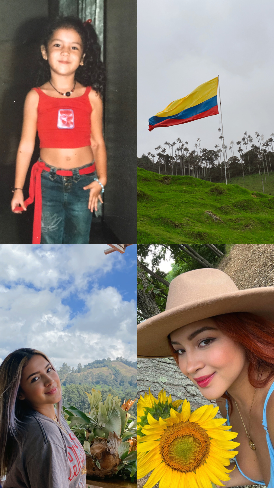
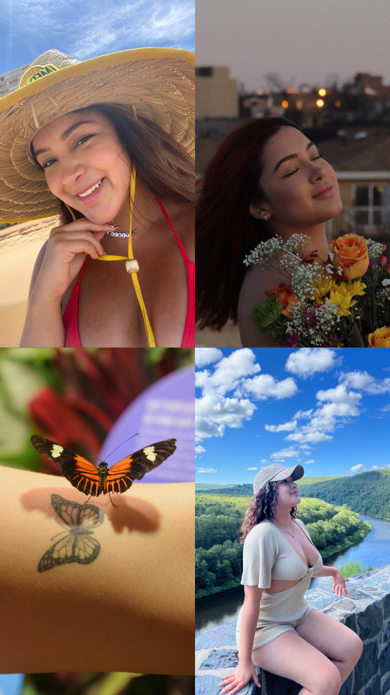
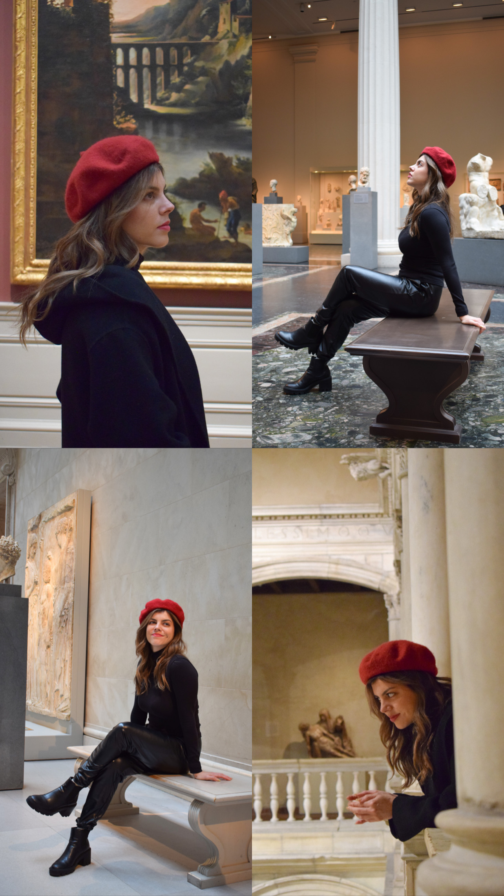
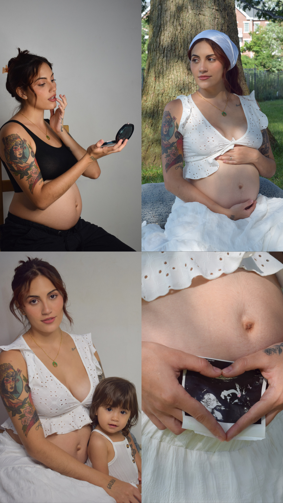

Hi! I'm Juliana Ceron but my relatives call me Juli. I'm from Cali, Colombia and I'm 25 years old. I move to New York City almost six years ago. I am finishing my digital marketing Associates’s degree at BMCC. I’m an animal and nature lover, my biggest passion is the photography, I really enjoy take pictures of everything surround me, I can find magic on simple details in our routine moments. I also like to travel, watch the sunset and change my hair color a lot, as you can see! Here are some pictures of me, when I was a child and the picture of the Colombia flag was taken in Salento Quindío, "Valle del Cocora". Other picture in Puerto Rico and some other places around nature:
 Speaking about my passion, I got my first camera when I was eight years old and since then I had been keeping good memories with my family and friends. Living in New York let me change my perspective about my passion, transforming a hobby to an actual job. I’m starting my career as a photographer, the power to freeze a moment forever and revive that moment each time we look at the picture is amazing! I know that there’s so much more to learn and practice, but I am enjoying every second of this world, I feel the connection with the people, I also believe in my skills and how happy the camera makes me feel. I want to show you some of the photoshoots I have done:
 Copyright © 2024 Juliana Ceron - All Rights Reserved